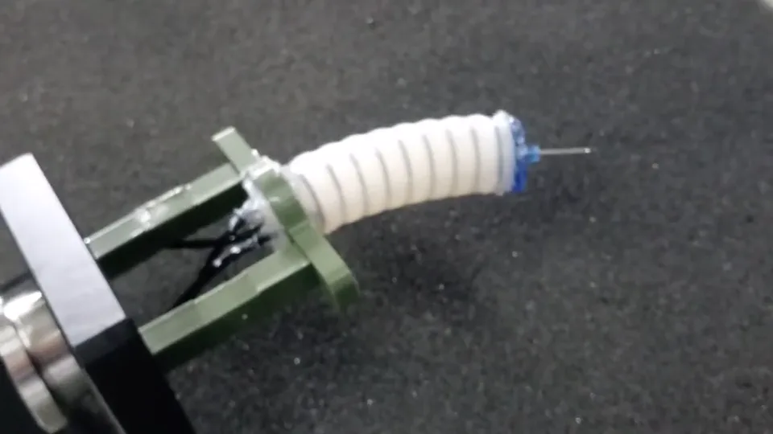
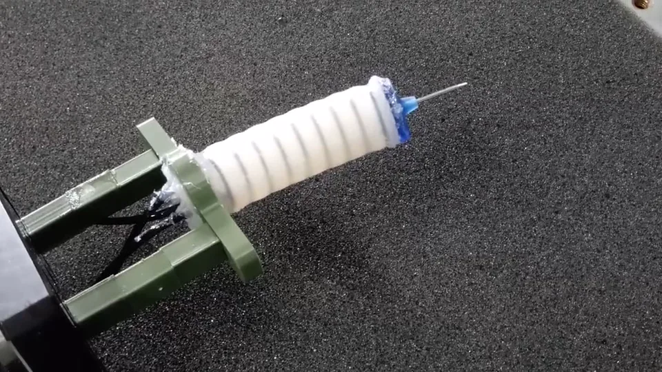

01Application
A tip that lines up the needle
The head is meant as the last segment of an endoscopy or colonoscopy device: bend towards a target, extend, and push a needle into tissue.
Soft roboticsMedical roboticsHyperelastic FEA2019–2021Indo–Korea Joint Network Centre
A pneumatic silicone tip for endoscopy-like tasks, reinforced with embedded O-rings so it can steer in any direction, extend to insert a needle and press with useful force.

The idea
Tissue sampling at the end of an endoscope needs a tip that is soft, steerable and still able to push. Plain silicone actuators bulge, lose stiffness and waste pressure.
Embedding O-rings between two silicone layers contains the bulge, adds stiffness and improves both bending range and extension, letting the head line a needle up and drive it forward.
My role
Toolbox
01Application
The head is meant as the last segment of an endoscopy or colonoscopy device: bend towards a target, extend, and push a needle into tissue.
02Two-layer design
The inner actuator is cast in a harder silicone; a thin outer layer of softer silicone holds O-rings in place around it. The rings stop radial ballooning, so more of the pressure goes into bending and extension, and the head stays stable while pressing.
From C1Steering head · ICCAS 2021C7Reinforced bending actuator · AIR 2021
03Finite-element analysis
A Yeoh hyperelastic model fitted to tensile tests drove Abaqus simulations of free bending, extension and blocked-tip force, which guided the design iterations before casting. Prototype bending at 22, 42 and 48 kPa was compared with the simulated shapes, and the models were used to study contact force at bend angles of 15°, 30° and 45°.

04Characterization
A six-axis force sensor and an indexing attachment measured the force at a blocked tip, axially and after bending, for comparison with the simulations.
Where it started
The line began with a bending actuator built from two silicone grades, a softer channel layer on a harder core, which held its shape better under load without losing force (Best Oral Presentation, AIR 2019).
It continued with an O-ring-reinforced bending actuator carrying a Velostat force sensor, and later with ring-reinforced in-plane fingers for a soft gripper.
From C10Soft bending actuator · AIR 2019C7Reinforced bending actuator · AIR 2021C13In-plane soft fingers · CONECCT 2024
Connected work
D. Sarkar, S. Chakraborty, A. Arora, S. Sen
21st Int. Conf. on Control, Automation and Systems (ICCAS), Jeju, 2021
D. Sarkar, S. Dasgupta, Srinivasa Reddy N., A. Arora, S. Sen
4th Int. Conf. on Advances in Robotics (AIR '19), IIT Madras, ACM
D. Sarkar, S. Chakraborty, A. Arora, S. Sen
5th Int. Conf. on Advances in Robotics (AIR '21), ACM
S. Choudhury, D. Chatterjee, D. Sarkar, D. Gan, A. Arora, S. Sen
IEEE CONECCT, 2024